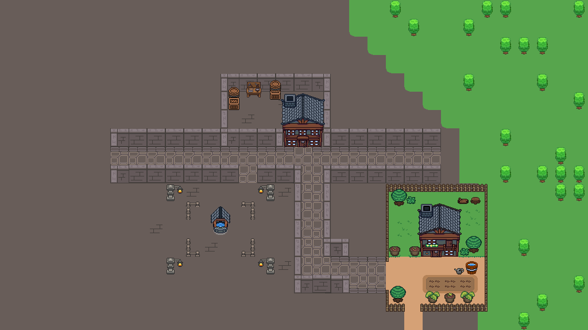

Game & Systems Design
Mechanics, player resources, interactions, progression concepts and system documentation.
PERSONAL PROJECT · IN DEVELOPMENT
An original 2D top-down pixel-art action RPG built around magic, exploration, world interaction and player-driven consequences. I am developing Aquelarre as both a game design project and playable Unity prototype, taking systems from documentation through implementation, testing and iteration.

Game Designer & Generalist Developer
Unity / C#
2D Top-Down Pixel Art
Active Development
Aquelarre is a long-term personal project where I work across game design, implementation and production.
I create gameplay concepts and documentation, prototype systems directly in Unity, test their behavior in-engine and iterate based on readability, responsiveness and how well each mechanic supports the intended player experience.
I also create pixel-art assets, environments, interface elements and animation required to test the systems in a representative game context.
Mechanics, player resources, interactions, progression concepts and system documentation.
Unity/C# implementation, gameplay prototyping, debugging and technical iteration.
Character sprites, animation, environments, HUD assets and production documentation.
Four-direction movement connected to directional idle and walk animation states, environmental collision and camera behavior.
Interactive environmental objects react differently depending on their physical properties and the spell being used, creating rules the player can learn and apply during exploration.
Spell usage is connected to a player resource system that tracks consumption, recovery and gameplay states while preventing invalid resource values.
Player decisions are designed to interact with reputation, witnesses, evidence, regional states and character relationships as development expands.
Directional movement, animation, collision and camera behavior.
Physics-based interaction and environmental gameplay prototyping.
Resource behavior, gameplay states, debugging and system refinement.
My workflow for Aquelarre treats documentation and implementation as connected parts of the same process. Systems are first defined through rules and player goals, then prototyped and evaluated directly in gameplay.
Define the intended player experience, system rules, limitations and interactions before implementation.
Translate the design into a playable Unity prototype using C# and representative game assets.
Evaluate usability, feedback and edge cases, then modify both the implementation and design rules.
The current build focuses on establishing the core gameplay foundation: player control, interaction, spell behavior, resources, HUD feedback, environmental rules and reusable gameplay systems. New mechanics are implemented progressively and tested before being integrated into the broader world, narrative and progression structure.